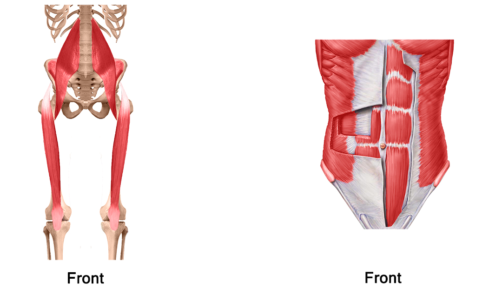

Pain Response
The pain response exists to protect our bodies from harm. Pain manifests in the brain and is based on multiple variables. Some variables are involved with past experiences and can change intensity, duration, and perception of pain, while other variables are based on how areas away from our brain are receiving information from our environment. Generally speaking, pain is a sign that we should discontinue activity or change our body position to avoid further damage. Most pain signals are temporary and can be remedied with the appropriate intervention.
Tissue injury or Nociception
Tissue injury is a local disruption of body tissue that leads to an inflammatory response. This inflammatory response activates local nerves which send signals to our spinal cord and eventually our brain where we experience pain. Most often it is from damage to skin, muscle, tendon, ligament, bone, joint capsule, or nerve if it involves the musculoskeletal or integumentary system. Our organs can also be sources of localized tissue injury or can refer pain to other regions of our body. One way to help determine the source of local tissue injury is to move the affected area and see if it changes what type of pain or the level of pain you are experiencing. Pain at rest is indicative of a prolonged inflammatory response, sub-optimal posture, or can indicate something more serious and should be addressed immediately.
Chronic Pain
Chronic pain is a maladaptive response based on the perception of pain for a
prolonged period of time: usually defined as 3 months or longer. Chronic pain often begins by
local tissue injury and an inflammatory response.
As a result, it is common to avoid irritating the injured area and even try to protect it.
This behavior reinforces the idea that there is injury, even if the area is physiologically
healed. As this type of behavior continues, the area can become hypersensitive to stimuli. As
an example, if I bump my elbow and it hurts for a few days, I may carry that arm closer to my
body, or use my other arm to protect it to avoid hurting it more. If I do bump it one day by
mistake, I will have an intense pain response based on the BELIEF that it is still injured
even if that’s not true. If this continues long enough, eventually nerves near the area, and
our spinal cord will respond more intensely if the area we believed to be injured is
stimulated.
Over time, even our brains begin processing pain at a lower level of stimulation, and
eventually the area in our brain responsible for that specific body part enlarges. This
phenomenon causes us to experience pain in an area without even stimulating it. The biggest
issue for people experiencing chronic pain in my experience is that providers don't believe
them because local tissue damage is not present. THE PAIN IS REAL. The pain is as real as if
there were local tissue damage. It takes conscious disagreement with what you are perceiving
to change this type of pain response.
Bone: Comprises our skeleton, protect organs, serves as attachment sites for tendons and ligaments, and produces blood cells.
Muscle: Contractile tissue made up of small fibers that shorten to create movement of bones around a joint, control motion at a joint, or maintain a certain body position without movement.
Fascia: Encloses our muscles and serves as attachment point for different structures in our bodies. As more research is done, we are learning about the importance of fascia in smooth and effective muscle and joint function. Fascia also surrounds some organs and can be thick or thin depending on where it is found.
Tendon: Attaches muscle to bone. Made up of a sturdy protein called collagen.
Ligament: Attaches bone to bone and provides joint stability. It’s Made up of collagen and elastin- a more elastic protein than collagen.
Joint capsule: A bundle of ligamentous like fibers that surrounds joints to hold nutritious fluid and facilitate support for the joint. The function of joint capsules vary significantly between joints.
Cartilage: Coating found at the end of bones to form joint surfaces. Allows for smooth, pain free movement. Cartilage protects from bone on bone contact which can lead to pain in some cases. Cartilage is also found in our ear lobes, the end of our noses, and in tissues that absorb force and create stability such as the meniscus, and labrums of our shoulders and hips.
Many injuries we’ve seen in the clinic involve muscle imbalance around a joint. This causes either shortening, lengthening or stiffness of involved muscles and can translate into increased compression or force through a joint at, above, or below the area of imbalance. As an example, hip muscles are often implicated in knee pain. Correcting these imbalances and teaching the right muscles when to turn on is a huge part of healing the musculoskeletal system. Below are explanations of some common imbalances.
Hip Flexors vs. Abdominals: Oftentimes the hip flexor muscles start to work overtime causing shortening and tightness which can put stress on the low back and pelvis. By training abdominals while deactivating hip flexors, you can often reduce back pain. (Link)
Gluteus Maximus vs. Hamstrings: Commonly found in runners, the hamstrings will start to work harder than the glutes or buttocks leading to tightness, shortening, and strain of the hamstrings. Retraining the glutes to fire is hard work, but can relieve stress to your whole lower extremity, and even your low back.
Tensor Fasciae Latae (TFL) vs. Gluteus medius: This one is less commonly known but is often a culprit in knee pain, especially involving the kneecap. When the TFL is firing more than the gluteus medius, it can cause poor knee mechanics which increases the compression of the kneecap on your femur (thigh bone) and tibia (bigger lower leg bone). There are many useful exercises to strengthen our gluteus medius. s
Upper Trapezius vs. Shoulder blade muscles:: The upper trapezius or upper traps as you may know them are very large powerful muscles. They activate more often and more powerfully than is ideal which results in poor positioning of our shoulder blade. Our shoulder blade has over 10 muscles that either attach or originate from it. These muscles become too short or long when our upper trapezius starts working overtime, and cannot contract in a normal way leading to poor shoulder positioning and movement.
Bone
Contusion: A bone bruise. While painful, usually heals on its own in 4-6 weeks.
Fracture: When a bone is broken. A fracture can range from a minor
inflammatory reaction not often picked up on X-ray, to being broken into multiple pieces.
Displaced and non-displaced - A displaced fracture will often require surgical
intervention to ensure proper alignment before the healing process begins. A non-displaced
fracture has a higher likelihood of healing correctly without surgery but it is important
to see an orthopedist in either case.
Avulsion fracture: When a muscle contracts so hard it tears the tendon from the bone
leading to a small fracture right above or below the tendon insertion.
Osteopenia: Precursor to Osteoporosis
Osteoporosis: Decrease in bone density increasing likelihood of fracture.
Bone Spur: Extra bone growth that can cause irritation with other tissue types.
Muscle
Contusion: A bruised muscle usually from direct contact or pressure. There
are 2 main forms.
Intermuscular: This is damage to muscle cells that are located near the periphery of our 3
dimensional muscles. Although usually quite painful, these types of bruises tend to heal
as our body has an easier time draining the inflammatory fluids that gather as a result of
the healing process.
Intramuscular: This type of bruise occurs at a deeper level of our 3 dimensional muscles
and poses a greater risk as fluid gathers without an easy way to drain. Pain will often
last longer than 4 days. If this area is not “mobilized” or stretched/moved, there is risk
of calcification which can be a more painful, long term condition known as myositis
ossificans.
Strain: Occurs as a result of too much tension put through muscle fibers causing a small to large rupture of tissue. Strains are often referred to as “tears” and are common when the body is put under stress at a level beyond its tissue tolerance. They can occur in poorly trained to highly trained individuals and will either immediately cause a sharp pain or set in within the following few hours. Using the injured muscle will cause pain making strains fairly easy to identify.
Grade 1 Strain: Microtears of muscle fiber resulting in a local inflammatory process, but no evidence of a “palpable defect” or a divot in the muscle fiber. These usually heal within 2-4 weeks with rest, light stretching, and gradual return to activity.
Grade 2 Strain: Larger tears to individual muscle fibers that are a part of the muscle belly. This level of damage requires your body to lay down scar tissue to heal the injury, and therefore take 6-12 weeks to heal. Physical Therapy can help ensure proper alignment of scar tissue and light exercise that will not overstress healing tissue.
Grade 3 Strain: Complete rupture of muscle fiber. There is a palpable defect or divot where the fibers were separated.This is more serious and usually takes 12 weeks to 6 months to heal. There is significant pain with any contraction of the muscle, loss of strength and swelling. Scar tissue lays down to heal the ruptured area. These injuries should be examined and treated by a doctor or physical therapist to facilitate healthy healing and return to normal activity. These may require surgery.
Muscle Tightness: usually a sensation of stiffness that can lead to a decrease in range of motion. It is most often the result of muscle imbalance but can also be congenital.
Tendon
Tendinitis: Inflammation of a tendon, usually due to repetitive motion that
puts
increased stress on the tissue. Tendinitis requires rest and specific types of muscle
contractions to heal with gradual increase in resistance below the threshold of pain. A
normal tendinitis should get better within 4-8 weeks.
Common types: Tennis elbow (often longer lasting), achilles tendinitis, golfer’s elbow,
rotator cuff tendinitis
Tendinosis: Starts out as tendinitis but lasts significantly longer and can cause extreme soreness. These types of injuries can take up to 6 months to get better and may last longer if not treated correctly.
Tendon Rupture: Complete tear of a tendon resulting from high stress like
jumping or lifting heavy weights. These often require surgery and are time sensitive.
Most common ruptures: Achilles tendon, Biceps tendon
Ligament
Sprain: A tensile force that overwhelms the elastic fibers of a ligament causing micro tearing or larger tears. Often a result of a sudden movement- a fall, or twist of a joint.
Grade 1 Sprain: Microtears of fibers causing inflammation and painful motion in a direction that stresses the ligament. Usually heals in 1-3 weeks.
Grade 2 Sprain: Partial tear of fibers leading to inflammation and painful motion with most movement of the joint. Heals in 6-12 weeks.
Grade 3 Sprain: Complete tear or rupture of ligament. In some cases requires surgical intervention. Often requires immobilization of the joint for 12 weeks as the ligament heals. Some ligaments such as the ACL in our knees are unable to heal if completely torn.
Foam Rolling
Foam rolling is an effective technique used to decrease tissue “tightness” or density. It can be used before or after activity and will likely cause some discomfort in the muscle you are rolling. In this case, pain is an indicator of an area where you need to focus the pressure to decrease the density of those fibers, thereby allowing the muscle to become more pliable.
Foam roll quads
The quadriceps are a group of 4 large thick muscles that support us in standing, stair climbing, sit to stand transitions, and getting up from the floor. It is important to rotate your feet inward and outward to make sure you are applying pressure to the full muscle for best results.
Foam roll glutes or buttocks
The glutes are very powerful hip extensors that help propel us forward when walking, stair climbing, standing up, and jumping. There are also multiple smaller muscles under the glutes that can get tight or shortened and cause pain in our buttocks, low back, hips, and legs.
Foam roll calves
Our calf muscles actually consist of 2 larger muscles- gastrocnemius and soleus, and a smaller muscle - posterior tibialis that helps us bear weight and supports our feet. They are often very painful to foam roll, as they get overworked and develop “knots” or areas of dense muscle tissue.
Mobility
Maintaining healthy mobility in our joints helps decrease stresses on our body tissue leading to lower incidence of strain, pain and injury. Healthy range of motion also helps lubricate our joint surfaces and nourish our cartilage.
Upper back mobility
Our upper backs get stiffer and more hunched as we age. This exercise can help keep us more mobile. It is used in Physical Therapy to help decrease neck pain, shoulder pain, and low back pain.
Lower back mobility
Just as our upper back can get stiff, so can our lower backs. The best way to keep them healthy is gentle motion and to keep active whether it be a daily walk, biking, swimming, or some form of regular exercise that avoids high loads through our spine.
Hip mobility
Hip motion and mobility is important for low back, knee and ankle health.
Ankle mobility
Ankle motion and mobility is also very important for knee, hip and low back health. Without healthy ankle motion, muscles and joints that absorb force as we move have to take up the force that our ankle is not dispersing.
Shoulder mobility
Maintaining shoulder mobility is important to decrease risk of neck and shoulder pain. The less we use our shoulder through its normal range of motion, the more common it is for us to lose the ability to move our shoulder high enough to reach something above our heads.
Exercise Prescription
Specific exercise prescription is also an integral part of progressing towards your goals. Exercises can address different variables such as:
Tissue healing
Muscle strengthening
Hypertrophy
Muscular endurance
Power
Range of motion
Flexibility
Joint stability
Balance
In general, we prefer to conduct an evaluation before prescribing exercise.